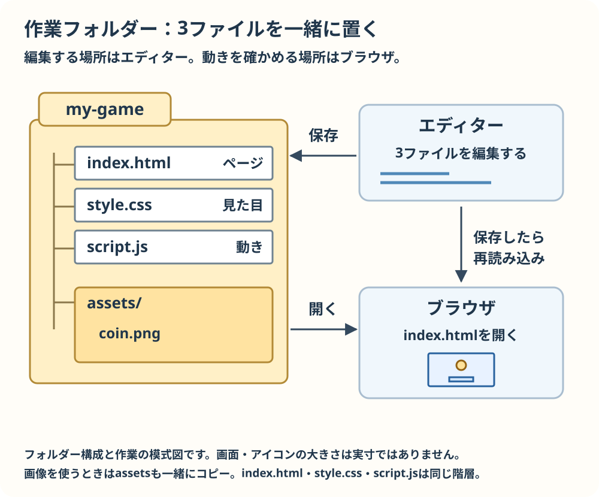

準備と操作
1. ダウンロードして展開
- リポジトリのページで「Code」から「Download ZIP」を選びます。すでに展開したフォルダーがある場合はそれを使えます。
- WindowsではZIPを右クリックして「すべて展開」を選び、展開先を開きます。MacではZIPをダブルクリックして展開します。ZIPの中で直接編集せず、展開したフォルダーを使います。
- 中にtemplate、tutorial、examples、featuresが見えれば準備できています。
2. 自分の作業フォルダーを作る

3ファイルは同じ作業フォルダーに置きます。編集したら保存し、そのフォルダーのindex.htmlをブラウザで再読み込みしましょう。画像を使うときはassetsも一緒にコピーします。
- 分かりやすい場所に新しいフォルダーを作ります。名前は例えばmy-gameです。
- 展開したtemplateフォルダーのindex.html、style.css、script.jsの3つを、その作業フォルダーにコピーします。元のtemplateは残します。
- コードエディターの「フォルダーを開く」でmy-gameを開き、script.jsを選びます。名前が同じファイルが別のフォルダーにもあるので、編集先を確かめます。
- 作業フォルダーのindex.htmlをブラウザーで開きます。空のCanvasが見えればひな型を開けています。
3. 編集して確かめる
- 教材の変更前を探し、コピー用コードに置き換えます。記号は半角で、括弧や引用符も省かず入力します。
- エディターで保存します。Windowsでは通常Ctrl + S、MacではCommand + Sです。
- ゲームを開いているブラウザーに戻り、再読み込みします。ページの説明ではなく、作業フォルダーのindex.htmlを開いていることを確かめます。
- 教材の「保存後の確認」と同じ表示や動きが出れば成功です。違えばエラーを直す練習を参考にします。
つまずいたら
- Windowsではエクスプローラーの表示設定で「ファイル名拡張子」を表示し、index.html.txtのように二重になっていないか確かめます。
- 全角の括弧・数字・引用符が混ざっていないか、エラーの行とその前後を見ます。
- 同じ名前の別フォルダーを編集したり開いたりしていないか、エディターとブラウザーの場所を比べます。
- 画像を使う見本ではassetsフォルダーもindex.htmlと同じ階層にコピーします。srcの名前、大文字・小文字、拡張子と実ファイルを比べます。
- ゲーム画面をクリックしてから操作します。保存し忘れたときは保存してから再読み込みします。